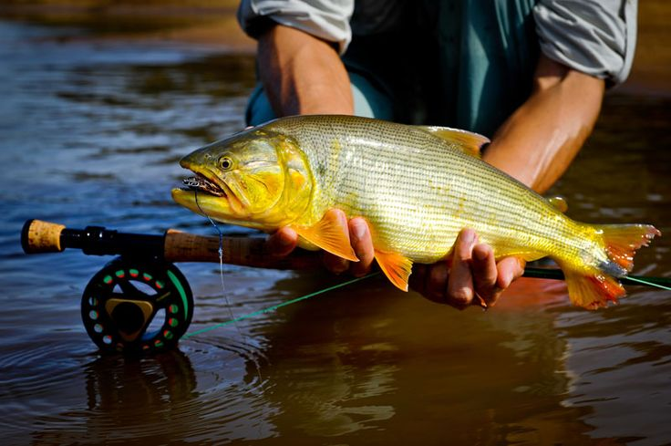

Sobre a Pesca
A pesca é uma atividade muito antiga e também um esporte praticado por milhões de pessoas no mundo inteiro. Além de divertida, ela ajuda no contato com a natureza e proporciona momentos de lazer.
Peixes Mais Conhecidos Do Brasil
- Tucunaré
- Pirarucu
- Lambari
- Tilápia
- Pintado
Imagem de Pesca
